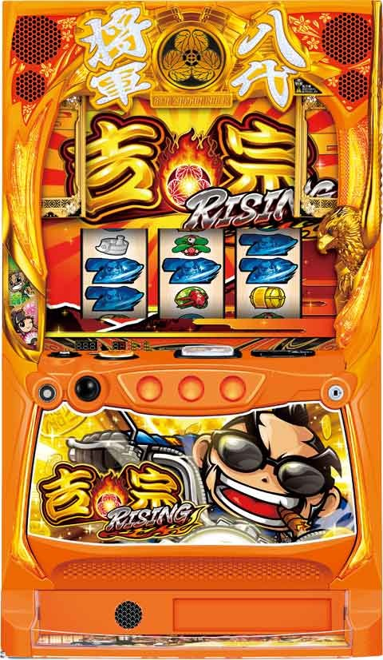

L吉宗RISING

[天井情報]
800G+α ボーナス当選
AT間天井 1200G
リセット時、AT単発後はAT間 800Gに短縮
REGスルー天井 REG5回目でAT当選
[リセット判別]
不明
[有利区間について]
同一有利区間内0から差枚2200枚以上でエンディング
狙い目
[リセット狙い]
AT間220Gから
[AT間天井狙い]
非短縮時
積極派 650Gから
慎重派 720Gから
短縮時
積極派 140Gから
慎重派 200Gから
※ボーナス間でボーダー調整
※短縮時は影響なし
ボーナス間毎の調整
0-300 +0
300-400 -50
400-550 -100
550- ボーナス間単体で狙える
[ボーナス間天井狙い]
550Gから
※AT間狙いがメイン。
[ゾーン狙い]
※ゾーン狙いはAT間ハマり
※短縮時の150のゾーンは弱いため単体で狙えない。
150ゾーン狙い
120Gから前兆抜けまで
ゾーン非当選時は250の前兆抜けまで
250ゾーン狙い
220Gから前兆抜けまで
[REGスルー狙い]
4スルーから
3スルーはAT間600Gから
[同行キャラ狙い]
同行キャラ2人の場合は当選率アップ。
[昇天ポイント狙い]
保有ポイント示唆が中以上でポイント解放まで(18時以降は推奨しない)。
示唆大は残り3時間あれば？
100pt到達で次回の初当たりが振舞昇天か金鷹伝説に当選。
{kind=link}
[ライジングポイント狙い]
不明
[有利区間切れ狙い]
同一有利区間0から差枚
1800枚以上 0Gから250のゾーン消化まで
1400枚以上 60Gから250のゾーン消化まで
0から差枚2200枚でエンディングから上位ATのチャンス
やめ時
ボーナス後前兆移行なら前兆確認やめ。AT非突入の場合はAT間のハマり具合で判断。
AT終了後はやめ。
その他
吉宗AT単発の履歴
12:48のATが単発です
{kind=link}
有利切れサインの履歴
19:57の19G当選が有利切れのサインです。
店舗のデータ機によって違う可能性あり。
{kind=link}
参考元
基本情報
- メーカー: サボハニ
- 機械割: 97.6% 〜 111.2%
- 導入開始日: 2024年01月09日（火）
- ゲーム性概要: 通常時はゲーム数消化とレア役で初当りを目指すゲーム性で、仲間が同行していれば対応レア役成立時の期待度がアップ。爺と姫の両方が同行すれば大チャンスだ。 「将軍ボーナス」は10G継続し、消化中は「爆走大盤振舞」抽選やフリーズを抽選。「爆走大盤振舞」が出玉増加のメインとなっていて、純増約4.0枚/Gの差枚数管理型AT。レア役などで枚数直乗せやライジングチャレンジポイントの獲得を抽選する。終了後は必ず「八代将軍チャレンジ」へ突入。15G以内に1/10.6の青7揃いを引けば引き戻し確定だ。ライジングチャレンジポイントがMAXの状態で引き戻すと、特化ゾーンの「振舞昇天」を経由してATへ突入する。


打ち方
打ち方・小役
打ち方（小役狙い）
「最初に狙う絵柄」 左リール上段付近に姫を狙う。

「チェリー停止時」
成立役…弱チェリー／強チェリー

「下段姫停止時」
成立役…ハズレ／リプレイ／ベル／チャンス目

「松停止時」
成立役…松／チャンス目
中リールに松を狙い、右リールをフリー打ち。

「レア役の停止形」

変則押しはNG
通常時、押し順ナビなし時は左リール第1停止での消化を推奨する。

解析情報通常時
小役関連
小役確率
| 役 | 確率 |
|---|---|
| 押し順ベル | 1/1.7 |
| 弱チェリー | 1/79.9 |
| 強チェリー | 1/431.2 |
| 松 | 1/79.9 |
| チャンス目 | 1/431.2 |
共通ベル確率
左第1停止で揃う13枚ベルが共通ベル（通常時からカウント可能）。
［設定差アリ］ボーナス・AT当選率
※弱レア役…弱チェリー、松 強レア役…チャンス目、強チェリー
［設定差ナシ］ボーナス・AT当選率
| 契機 | 当選率 |
|---|---|
| 仲間同行なし・強レア役 | 10.2% |
| 1人同行時・対応強レア役 | 50.0% |
| 2人同行時・弱レア役 | 33.6% |
| 2人同行時・強レア役 | 75.0% |
※弱レア役…弱チェリー、松 強レア役…チャンス目、強チェリー
前兆
鷹狩り中のレア役・金鷹伝説昇格率
| 役 | 昇格率 |
|---|---|
| 弱チェリー、スイカ | 約25% |
| チャンス目、強チェリー | 100% |
強レア役なら金鷹伝説昇格確定（内部的にAT当選時のみ）。
仲間同行
仲間同行概要
ゲーム数消化やレア役成立時の一部で爺や姫が同行することがあり、同行中のレア役成立でボーナス当選期待度がアップする。AT中も同行抽選はおこなわれていて、同行時は暴れん坊高確率や枚数上乗せ当選の期待度がアップ。 同行は一定ゲーム数消化で終了する。

仲間の同行契機
| 契機 | 同行キャラ | |
|---|---|---|
| レア役 | 松 | 爺 |
| レア役 | 弱チェリー | 姫 |
| ゲーム数消化 | 100Gごと | 爺or姫or両方 |
［通常時］仲間同行時の恩恵
| 仲間 | 恩恵 |
|---|---|
| 爺 | 松、チャンス目でのボーナスorAT当選期待度アップ |
| 姫 | 弱、強チェリーでのボーナスorAT当選期待度アップ |
| 両方 | 全レア役で1人同行時よりも ボーナスorAT当選期待度アップ |
［AT中］仲間同行時の恩恵
| 仲間 | 恩恵 |
|---|---|
| 爺 | 松、チャンス目での上乗せ・暴れん坊高確率抽選優遇 |
| 姫 | 弱・強チェリーでの上乗せ・暴れん坊高確率抽選優遇 |
| 両方 | 全レア役で抽選が優遇 |
仲間同行当選率
| 契機 | 爺 | 姫 |
|---|---|---|
| 松 | 50.0% | ー |
| 弱チェリー | ー | 50.0% |
| 100G消化ごと | 約40%で1～2人が同行 |
ボーナス・AT抽選
初当り契機
おもなボーナス・AT当選契機はゲーム数消化とレア役での直撃の2つ。極端に偏ることはなく、どちらからもまんべんなく当たりに期待できるスペックとなっている。
ボーナス・AT当選契機
| 契機 | 内容 |
|---|---|
| ゲーム数消化 | 下2桁が50のゲーム数がチャンス 150、250、750Gがとくに当たりやすいゾーン |
| レア役直撃 | 仲間同行の有無によって期待度が変化する |
昇天ポイント
昇天ポイント概要
プレイヤーにとって嫌なことが起こると貯まるポイントで、MAXの100pt貯まると次回初当り時に金鷹伝説 or 振舞昇天が確定する。
昇天ポイント獲得契機
| 契機 | 内容 |
|---|---|
| 1 | ボーナス間、500Gハマリ |
| 2 | AT間天井到達（1150G以降のゾーン到達） |
| 3 | ATが単発で終了 |
| 4 | ライジングチャレンジポイント500pt以上保有時に 八代将軍チャレンジ失敗 |
| 5 | ライジングチャレンジポイント900pt以上保有時に 八代将軍チャレンジ失敗 |
| 6 | 将軍ボーナスが4連続 |
※契機2、5、6は大量ポイント獲得に期待
演出動画
ロングフリーズ
八代将軍チャレンジ成功後の一部で突入するフリーズ高確率中や、REG中にロングフリーズが発生する可能性あり。金7揃い＋青7揃い7個の合計8個ストックが確定する超強力フラグだ。
解析情報ボーナス時
将軍ボーナス
将軍ボーナス概要
いわゆるREGボーナス。消化中はレア役によるAT抽選とロングフリーズ抽選がおこなわれる。フリーズは発生した時点でATへ直行、レア役でのAT当選時はボーナス後の高確率（前兆）を経由して告知される。

ATに当選しなかった場合でも、AT間のゲーム数はリセットされない。
将軍ボーナス性能
| 項目 | 内容 |
|---|---|
| 突入契機 | 初当りの一部 |
| 継続ゲーム数 | 10G |
| 1Gあたりの純増 | 約4.0枚 |
| 消化中の抽選 | AT、ロングフリーズ |
| 備考 | AT間、5回目のREG当選で 終了後の高確率を経由してATに当選 |
将軍ボーナス中・AT当選率
| 役 | 当選率 |
|---|---|
| 弱レア役 | 6.3% |
| 強レア役 | 25.0% |
※弱レア役…弱チェリー、松 強レア役…チャンス目、強チェリー
将軍ボーナス後の高確率・AT当選期待度
| 設定 | 期待度 |
|---|---|
| 1 | 10.6% |
| 2 | 11.8% |
| 3 | 13.6% |
| 4 | 16.5% |
| 5 | 16.8% |
| 6 | 17.0% |
※レア役での当選を含む期待度
爆走大盤振舞（AT）
爆走大盤振舞概要
差枚数管理型のATで、消化中はライジングチャレンジポイント獲得抽選や枚数上乗せを抽選。AT終了後は必ず八代将軍チャレンジ（引き戻しゾーン）へ移行する。ポイントがMAXに到達した状態で八代将軍チャレンジに成功すると振舞昇天突入が確定するので、早くポイントを貯められるかも重要だ（1000pt到達もしくは、AT終了まで獲得したポイントは引き継がれる）。

爆走大盤振性能
| 項目 | 内容 |
|---|---|
| 突入契機 | 初当りの一部、八代将軍チャレンジで引き戻し後 |
| 初期枚数 | 100枚以上or振舞昇天で決定 |
| 1Gあたりの純増 | 約4.0枚 |
| 消化中の抽選 | 枚数上乗せ、ライジングチャレンジポイント獲得、 暴れん坊高確率 |
レア役による枚数上乗せ当選率は低いが、当選時は100枚以上が確定する（100〜711枚）。
「ライジングチャレンジポイント」 ポイントはリール左に表示されていて、おもにレア役で加算。1契機の上乗せは10pt〜300ptで、暴れん坊高確率での大量加算も可能だ。

セット開始画面のレア役
セット開始画面でレア役を引くと、初期枚数優遇 or 振舞昇天からスタート濃厚。
セット開始画面・振舞昇天当選率
| 役 | 当選率 |
|---|---|
| 下記以外 | 約5% |
| 弱レア役 | 約10% |
| 強レア役 | 約75% |
※弱レア役…弱チェリー、松 強レア役…チャンス目、強チェリー ※ライジングチャレンジポイントが1000pt未満時のみ抽選
セット開始画面・AT初期枚数振り分け
| 枚数 | レア役以外 | 弱レア役 | 強レア役 |
|---|---|---|---|
| 100枚 | 100% | ー | ー |
| 200枚 | ー | 87.5% | ー |
| 300枚 | ー | 12.5% | 87.5% |
| 711枚 | ー | ー | 12.5% |
※弱レア役…弱チェリー、松 強レア役…チャンス目、強チェリー ※振舞昇天非当選時のみ抽選
暴れん坊高確率当選率
| 役 | 爺同行時 | 姫同行時 | 2人同行時 |
|---|---|---|---|
| 松 | 33.3% | 20.0% | 33.3% |
| チャンス目 | 100% | 50.0% | 100% |
| 弱チェリー | 20.0% | 33.3% | 33.3% |
| 強チェリー | 50.0% | 100% | 100% |
暴れん坊高確率
暴れん坊高確率概要
AT中のレア役成立時に突入する可能性がある、5G＋αのライジングチャレンジポイント獲得特化ゾーン。押し順ベルやレア役成立でポイントを獲得する。

暴れん坊高確率性能
| 項目 | 内容 |
|---|---|
| 突入契機 | AT中のレア役 |
| 継続ゲーム数 | 5G＋α |
| 消化中の抽選 | ベル、レア役成立でライジングポイントを上乗せ |
| 平均獲得ポイント | 188.8pt |
| 1契機の獲得ポイント | 10～500pt |
| 終了契機 | 5G消化後の上乗せ非発生時（人馬一体獲得時を除く） |
「キャラのオーラ」 青＜緑＜赤の順に大量ポイント獲得に期待。押し順ベルの第1停止の位置に対応したキャラが攻撃して、ポイントを獲得する。

「御庭番」 次ゲームでベル以上を引けば＋100pt以上確定。

「人馬一体」 一定ゲーム数間、連続でポイントを獲得する。

ベル成立時・獲得ポイント振り分け
| ポイント | 御庭番以外 | 御庭番 |
|---|---|---|
| ＋10pt | 42.6% | ー |
| ＋30pt | 25.0% | ー |
| ＋50pt | 25.0% | ー |
| ＋100pt | 6.3% | 68.4% |
| ＋200pt | 0.8% | 25.0% |
| ＋300pt | 0.4% | 6.3% |
| ＋500pt | ー | 0.4% |
御庭番出現＆人馬一体当選率
| 契機 | 御庭番 | 人馬一体（※2） |
|---|---|---|
| 毎ゲームの抽選 （※1） | 6.3% | 6.3% |
| 弱レア役 | ー | 9.8% |
| 強レア役 | ー | 100% |
※弱レア役…弱チェリー、松 強レア役…チャンス目、強チェリー ※1…毎ゲーム、左・中・右リールそれぞれに御庭番出現を抽選 ※2…御庭番選択時は人馬一体は発生しない
レア役成立時・獲得ポイント振り分け 弱レア役成立時
| ポイント | 御庭番以外 | 御庭番 |
|---|---|---|
| ＋50pt | 89.1% | ー |
| ＋100pt | 6.3% | 75.0% |
| ＋200pt | 3.1% | 23.4% |
| ＋300pt | 1.6% | 1.2% |
| ＋500pt | ー | 0.4% |
| 平均 | 61.7pt | 127.3pt |
強レア役成立時
| ポイント | 御庭番以外 | 御庭番 |
|---|---|---|
| ＋50pt | 人馬一体当選 | ー |
| ＋100pt | 人馬一体当選 | ー |
| ＋200pt | 人馬一体当選 | 75.0% |
| ＋300pt | 人馬一体当選 | 12.5% |
| ＋500pt | 人馬一体当選 | 12.5% |
| 平均 | 人馬一体当選 | 250.0pt |
※弱レア役…弱チェリー、松 強レア役…チャンス目、強チェリー ※弱レア役は御庭番出現抽選に漏れた場合の数値
八代将軍チャレンジ
八代将軍チャレンジ概要
AT終了後に必ず突入する引き戻しゾーンで、15G以内に青7が揃えば引き戻しが確定する。レア役での青7揃い抽選もあり、レア役契機は擬似遊技で青7が揃う。青7揃い後も15G消化までは継続するので、複数ストックも可能。AT中にライジングチャレンジポイントがMAXに到達していた場合、チャレンジ成功で振舞昇天を経由してATに突入する。

八代将軍チャレンジ性能
| 項目 | 内容 |
|---|---|
| 突入契機 | AT終了後 |
| 継続ゲーム数 | 15G |
| 消化中の抽選 | 青7揃い、レア役でAT引き戻しを抽選 |
| 引き戻し確率 | 1/10.6 |
※引き戻し確定後やストックあり時の青7揃い確率は1/10.6ではない
青7がダブルで揃えば、ストックを2個獲得！
「吉宗・チャンス告知」 狙えカットイン発生で青7揃いのチャンス。

「爺・完全告知」 告知発生で青7揃い確定。

「姫・最終告知」 15G間、7揃いが告知されず、ラストのルーレットでストック当選を告知する。青7揃いはリプレイフラグなので、リプレイを多く引いているほどストック獲得の期待度が高まる（レア役契機を除く）。

レア役での青7揃い当選率
リプレイフラグ（直揃い）だけでなく、レア役成立でも青7揃い（擬似遊技）に期待できる。チャンス目や強チェリーなら大チャンスだ。

復活抽選
八代将軍チャレンジ失敗時は、持っていたライジングチャレンジポイントを参照してAT引き戻しを抽選する。当選時は終了画面でPUSHボタンが出現。引き戻した時点でライジングチャレンジポイントは0に戻る（再抽選される）。
八代将軍チャレンジ終了時 保有ライジングチャレンジポイント別の復活当選率
| ポイント | 当選率 |
|---|---|
| 900～999pt | 約25% |
| 1000pt | 100% |
青7揃い（引き戻し当選）確率
AT引き戻し当選前は青7揃いフラグを引くか、小役契機の青7揃い抽選に受かれば引き戻し確定（トータル確率は1/10.6）。小役契機の場合、基本的には契機役が揃った後で青7が揃うが、最終ゲーム（15G目）だけは小役が揃う前に青7が揃う。
青7揃い確率
| 青7揃いなど | フラグ | 確率 |
|---|---|---|
| シングル揃い | リプレイA | 1/13.8 |
| シングル揃い | 1枚役A | 1/145.6 |
| ダブル揃い | リプレイA | 1/504.1 |
| ダブル揃い | 1枚役A | 1/6553.6 |
| 7揃い合算 | 1/12.3 | |
| リプレイ揃い | リプレイC | 1/16.0 |
| フェイク狙え | 1枚役C | 1/5.0 |
| 狙えカットイン発生時の期待度（※） | 約29% |
※レア役契機（最終ゲームは全役）を除く期待度
小役契機・青7揃い当選率
| ゲーム数 | 役 | 当選率 |
|---|---|---|
| 最終ゲーム以外 | 弱レア役 | 約5% |
| 最終ゲーム以外 | 強レア役 | 100% |
| 最終ゲーム | レア役以外 | 約10% |
| 最終ゲーム | 弱レア役 | 約50% |
| 最終ゲーム | 強レア役 | 100% |
※弱レア役…弱チェリー、松 強レア役…チャンス目、強チェリー
エンディング後の八代将軍チャレンジ

エンディング終了後に突入する八代将軍チャレンジは、成功すれば金7揃い確定なのでアツい！
フリーズ高確率
フリーズ高確率概要
八代将軍チャレンジで引き戻したときの一部で突入し、30G〜100G間、毎ゲームの成立役に応じてロングフリーズの発生を抽選。成立役での抽選以外に、100G継続時の一部でもフリーズが発生。終了後はATへ復帰する。

フリーズ高確率性能
| 項目 | 内容 |
|---|---|
| 突入契機 | 八代将軍チャレンジ引き戻し成功時の一部 |
| 継続ゲーム数 | 30～100G |
| 消化中の抽選 | 毎ゲーム、ロングフリーズを抽選 100G継続時の一部でもロングフリーズが発生 |
| 消化中の抽選 | 押し順ベル、レア役、リールロック発生時は ライジングチャレンジポイントを獲得 |
ロングフリーズの恩恵
| 項目 | 内容 |
|---|---|
| 恩恵 | 金7を1個＋青7を7個 （トータルでAT8個ストック） |
金7（金鷹伝説へ移行）を1個＋青7を7個、トータルでATを8個ストックと超強力！
「リールロック発生でチャンス」
リールロックが3段階目到達に到達すればフリーズ確定！
「ライジングチャレンジポイント獲得抽選もあり」
押し順ベル、レア役、リールロック発生時はライジングチャレンジポイントの獲得も抽選されるので、フリーズ非発生だったとしても次セット以降でのポイントMAX期待度が高まる。
振舞昇天
振舞昇天概要
ベル成立時の押し順がそのまま上乗せ枚数となる、新感覚の上乗せ特化ゾーン。

振舞昇天性能
| 項目 | 内容 |
|---|---|
| 突入契機 | 八代将軍チャレンジ成功時の一部 |
| 突入契機 | 金7揃いのAT開始時 |
| 突入契機 | ライジングチャレンジポイントMAX後の 八代将軍チャレンジ成功時は確定 |
| 継続ゲーム数 | 3G＋α |
| 消化中の抽選 | ベル、レア役成立で上乗せ確定 |
| 1Gの上乗せ発生期待度 | 約62% |
| 備考 | 3G連続で上乗せ時は、上乗せ非当選まで継続の 超振舞昇天へ突入 |
成立役別の上乗せゲーム数
| 役 | 内容 |
|---|---|
| ベル | 押し順に対応した枚数を上乗せ |
| スイカ・弱チェリー | ＋300枚 |
| チャンス目・強チェリー | ＋711枚 |
超振舞昇天当選率
| 契機 | 当選率 |
|---|---|
| 振舞昇天で3G連続上乗せ当選時 | 約33% |
「押し順ベルでの上乗せ」 上記のナビなら231枚を上乗せ。押し順ベル（6パターン）の割合は共通となっていて、1Gの上乗せ枚数の最小は順押しナビの123枚、最大は逆押しナビの321枚（レア役を除く）。

「上乗せ保証」 3G間で一度も上乗せが発生しなかった場合は、保証として100枚を上乗せ。この場合の一部で八倍将軍フリーズが発生し、上乗せ800枚を獲得できる。

［八倍将軍フリーズ］


「演出モードは2種類」 振舞昇天突入画面でMAXBETを長押しすると、ノーマルモードとスナイパー爺モードを変更可能（デフォルトはノーマルモード）。上乗せ性能はもちろん共通だが、告知方法が変化する。

［ノーマルモード］ レバーON時に発生する演出で上乗せ期待度等を示唆する。

［スナイパー爺モード］ レバーON時に演出が発生した時点で上乗せ確定。

超振舞昇天
振舞昇天の3G間、全ゲームで上乗せ発生後にリザルト画面でPUSHボタンが出現すると、超振舞昇天へ移行。上乗せ非発生まで振舞昇天が継続し続ける（上乗せ保証はないので、1G目でベルやレア役を引けなければ終了）。ベルでも上乗せ確定となる特化ゾーンなので、いかにベルを連続して引けるかが重要だ。


金鷹伝説
金鷹伝説概要
金7揃いから突入する高期待度のAT。メイン契機はロングフリーズだが、AT開始時の一部でも金7が揃うことがある。

金鷹伝説性能
| 項目 | 内容 |
|---|---|
| 突入契機 | AT開始時の金7揃い（ロングフリーズなど） |
| 恩恵1 | AT開始時に振舞昇天突入 |
| 恩恵2 | AT中はつねに爺と姫が同行 |
| 恩恵3 | 金7揃い自体がループする可能性あり |
振舞昇天からスタートするので大量枚数を持って始まる可能性が高く、ライジングチャレンジポイントも貯めやすいのが大きな恩恵だ。
金7揃い契機＆当選率
| 契機 | 役など | 当選率 |
|---|---|---|
| AT本前兆中のレア役 | 弱レア役 | 0.8% |
| AT本前兆中のレア役 | 強レア役 | 3.9% |
| 800G以降 | ゲーム数消化によるAT当選時 | 0.4% |
| AT連チャン中・ 確定画面でのレア役 | 弱レア役 | 0.2% |
| AT連チャン中・ 確定画面でのレア役 | 強レア役 | 20.0% |
| 八代将軍チャレンジ中 | 金7直撃 | 約1/8066 |
| 八代将軍チャレンジ中 | 青7揃い後の弱レア役 | 0.4% |
| 八代将軍チャレンジ中 | 青7揃い後の強レア役 | 0.4% |
| 昇天ポイント | ポイントMAX後の初当り時 | 25.0% |
ロングフリーズ
ロングフリーズ概要
REG中、フリーズ高確率中に発生する可能性あり。


ロングフリーズの恩恵
| 項目 | 内容 |
|---|---|
| 恩恵 | 金7を1個＋青7を7個（トータルAT8ストック） |
演出情報
通常時
ステージ解説
「昼」 基本ステージ。

「夕方」 前兆を示唆!?

連続演出期待度序列
| 演出 | 内容 |
|---|---|
| 悪者成敗 | 低 |
| 飲み比べ | ↓ |
| 追っかけ | ↓ |
| 剣豪対決 | ↓ |
| 最終決戦 | 高（成功でAT当選の期待大） |
［悪者成敗］

［飲み比べ］

［追っかけ］

［剣豪対決］

［最終決戦］

爆走大盤振舞当選濃厚パターン
| パターン | 内容 |
|---|---|
| パターン1 | プレミアム演出発生 |
| パターン2 | 連続演出中にリーチ目出現 |
ライジングチャレンジポイント示唆
AT初当り時のライジングチャレンジポイントの初期値は200pt〜900ptで、通常時のリプレイ成立時に発生する演出にポイント示唆パターンが存在する。
リプレイ成立時・初期ライジングチャレンジポイント示唆
| 演出 | 示唆 |
|---|---|
| リールバックライトフラッシュの点灯と消灯が逆 | 500pt以上示唆 |
| リプレイ音の鳴り出しが連打 | 500pt以上示唆 |
| 特殊なリールバックライトフラッシュが発生 | 800pt以上示唆 |
| リプレイ音の鳴り出しの連打が多く、 最後にカラスの鳴き声が大勢になる | 800pt以上示唆 |
獲得・保有ポイント示唆演出
| パターン | 獲得ポイント示唆 | 保有ポイント示唆 |
|---|---|---|
| 弱 | 1pt以上 | 70pt以上 |
| 中 | 10pt以上 | 90pt以上 |
| 強 | 50pt以上 | 100pt濃厚 |
液晶に金の羽が出現すればポイント獲得を、リール右側から金の羽エフェクトが出現すれば保有ポイントを示唆する。
［獲得ポイント示唆］

［保有ポイント示唆］ 100pt貯まれば次回初当り時に金鷹伝説 or 振舞昇天突入確定！

前兆
前兆ステージ
規定ゲーム数消化やレア役成立後は、前兆ステージを経由してボーナスやATの当否を告知。鷹狩りは当たればAT濃厚の激アツ前兆ステージとなる。
「高確率」 通過キャラやアイコン、家紋の大きさなど、シリーズおなじみの法則も健在!?

［赤高確率］ 背景が赤なら本前兆濃厚！

「鷹狩り」 AT当選に期待できる上位前兆ステージ。滞在中のレア役で金鷹伝説（金7揃い）への昇格を抽選する。

本前兆濃厚演出
| 演出 | パターン |
|---|---|
| 前兆ステージ | 高確率突入後、13～15G以外で発展 |
| オープニング演出 | レア役を否定 |
［オープニング演出］

爆走大盤振舞
確定画面の姫揃い
姫を狙え発生で振舞昇天からスタート濃厚。青7を狙えが発生時も姫を狙えば揃うが、液晶に姫が表示された場合のみ有効となる。

セット開始画面・振舞昇天濃厚パターン
| パターン | 内容 |
|---|---|
| 1 | 吉宗バイク＋富士山 |
| 2 | 前のセットと同一の画面 |
| 3 | セット数（◯回目）の表示が金文字 |
| 4 | 千両PUSH出現 |
［吉宗バイク＋富士山］

［金文字］

［千両PUSH］

爆走大盤振舞中・演出法則
| 演出 | 恩恵 |
|---|---|
| 白ナビ | 仲間同行or暴れん坊高確率濃厚 |
| バイクナビ | 上乗せ濃厚 |
| 下パネル消灯 | 上乗せ濃厚 |
| 千両PUSH | ＋300枚以上濃厚 |
［白ナビ］

［バイクナビ］

［千両PUSH］

暴れん坊高確率中のアイコンごとのポイント獲得期待度

アイコンごとの法則・獲得ポイント
| 項目 | 内容 | |
|---|---|---|
| 色の基本的な序列 | 青 | |
| アイコンの色 | 青 | 10pt以上 |
| アイコンの色 | 緑 | 30pt以上 |
| アイコンの色 | 赤 | 100pt以上 |
| 攻撃時の背景 | 青 | 10pt以上 |
| 攻撃時の背景 | 緑 | 30pt以上 |
| 攻撃時の背景 | 赤 | 100pt以上 |
| 爺アイコン | 緑 | 100pt以上 |
| 姫アイコン | 青 | 100pt以上 |
※爺アイコンは青or赤・姫アイコンは緑以上がデフォルト、矛盾で100pt以上
八代将軍チャレンジ
［吉宗］狙え発生時の演出法則
| 演出 | 内容 |
|---|---|
| 狙え発生時全体 | PUSHボタンを押して振動すれば青7揃い確定 |
| 初代風の狙え発生 | ダブル揃い確定 |
※振動しなくても青7揃いの可能性あり
［青7揃い1確目］

［爺］7揃い後の背景変化・示唆内容
| 背景 | 示唆 |
|---|---|
| バカンス | ストック1個あり |
| 夕方 | ストック2個あり |
| 夕方＋デカ太郎 | ストック3個あり |
［バカンス］

［夕方］

［夕方＋デカ太郎］

［姫］リプレイ成立時のAT引き戻し期待度
| 役 | 期待度 |
|---|---|
| リプレイ | 約50%以上 |
※引き戻し確定後は期待度が変化
パネルカスタム
消化中にPUSHボタンを押すと、演出パターンをカスタム可能。カスタムに応じて告知パターンが変化する。
パネルカスタムごとの演出内容
| カスタム | 演出 |
|---|---|
| 初代・八代将軍 （大・特大・ドデカ） | 初代風の狙えが発生 |
| TONOCHANCE | ランプが光れば引き戻し |
| TONOCHANCE | 告知タイミングは レバーON時：約25%、第3停止後：約75% |
| 鷹飛翔 | レバーON時に鷹が飛べば引き戻し |
| くのちゃん | くのちゃんが光れば引き戻し |
| くのちゃん | 予告音発生でチャンス |
［初代・八代将軍］

［初代・八代将軍ドデカ］

［TONOCHANCE］

［鷹飛翔］

［くのちゃん］

リプレイ1確目
左リール上段金7停止は、リプレイ揃いの1確目（通常リプレイ・青7揃いリプレイ共通）。ラストまで告知されない姫選択時などにリプレイ成立をいち早く察知できる。

振舞昇天
押し順ベル時の発生演出割合（トータル）
| No. | 演出 | 割合 |
|---|---|---|
| 1 | 上乗せナビ演出 | 31.9% |
| 2 | 振舞かけっこ演出 | 14.9% |
| 3 | 振舞障子演出 | 13.5% |
| 4 | 振舞あみだ演出 | 12.7% |
| 5 | 復活演出（押せない） | 11.5% |
| 6 | 春一番演出 | 5.0% |
| 7 | 振舞ルーレット演出 2だけ（中） | 4.5% |
| 8 | 振舞ルーレット演出 2だけ（右） | 4.1% |
| 9 | 春の海演出 | 1.7% |
| 10 | 復活演出（リーチ目） | 0.3% |
押し順ベルのナビパターン別演出割合
| No. | 123ナビ | 132ナビ | 213ナビ |
|---|---|---|---|
| 1 | 24.0% | 23.9% | 20.7% |
| 2 | 15.1% | 15.2% | 22.7% |
| 3 | 11.9% | 12.0% | 17.5% |
| 4 | 7.6% | 7.7% | 16.8% |
| 5 | 21.7% | 21.9% | 18.5% |
| 6 | ー | ー | ー |
| 7 | 36.1% | ー | ー |
| 8 | ー | 39.5% | ー |
| 9 | ー | ー | ー |
| 10 | ー | ー | ー |
| No. | 231ナビ | 312ナビ | 321ナビ |
| 1 | 20.8% | 5.2% | 5.3% |
| 2 | 22.6% | 12.1% | 12.3% |
| 3 | 17.4% | 20.4% | 20.7% |
| 4 | 16.8% | 25.3% | 25.8% |
| 5 | 18.4% | 9.6% | 9.8% |
| 6 | ー | 49.1% | 50.9% |
| 7 | ー | ー | 63.9% |
| 8 | ー | 60.5% | ー |
| 9 | ー | 59.6% | 40.4% |
| 10 | ー | 49.3% | 50.7% |
［振舞かけっこ演出］

［振舞障子演出］

［振舞あみだ演出］